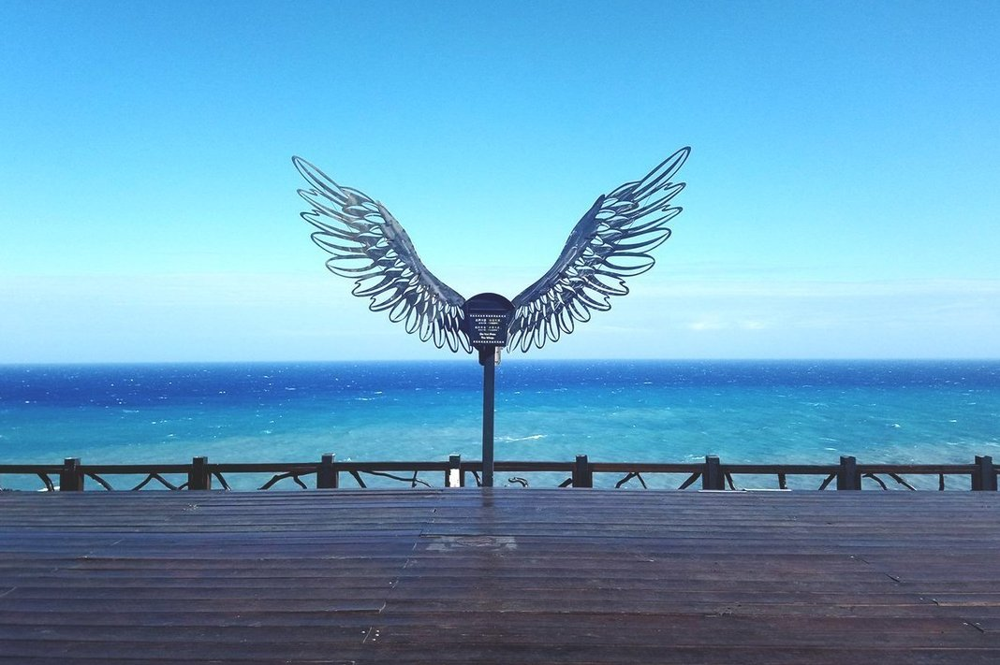
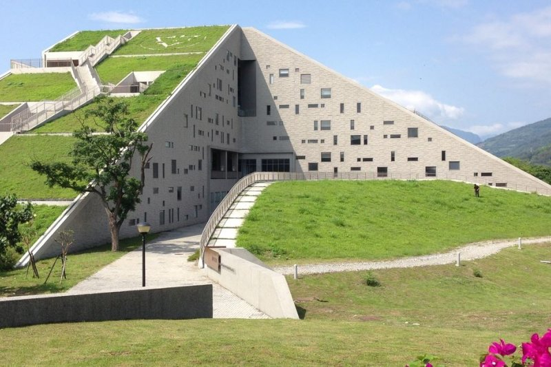
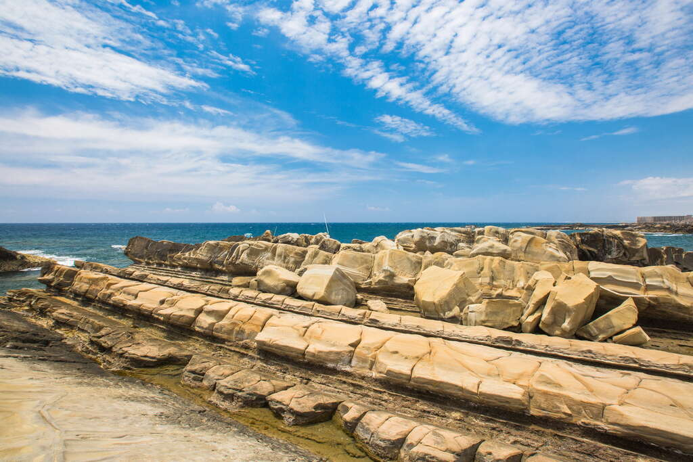
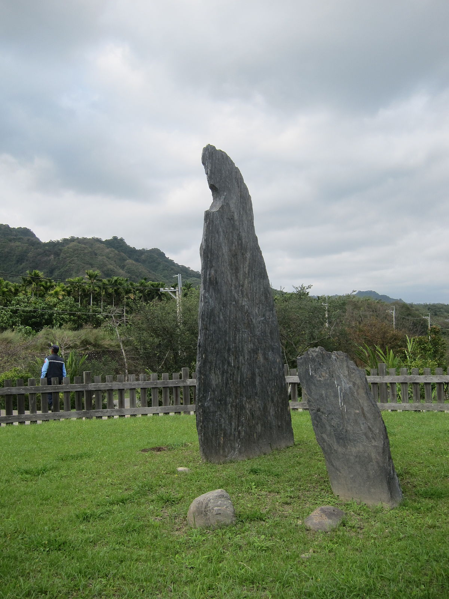
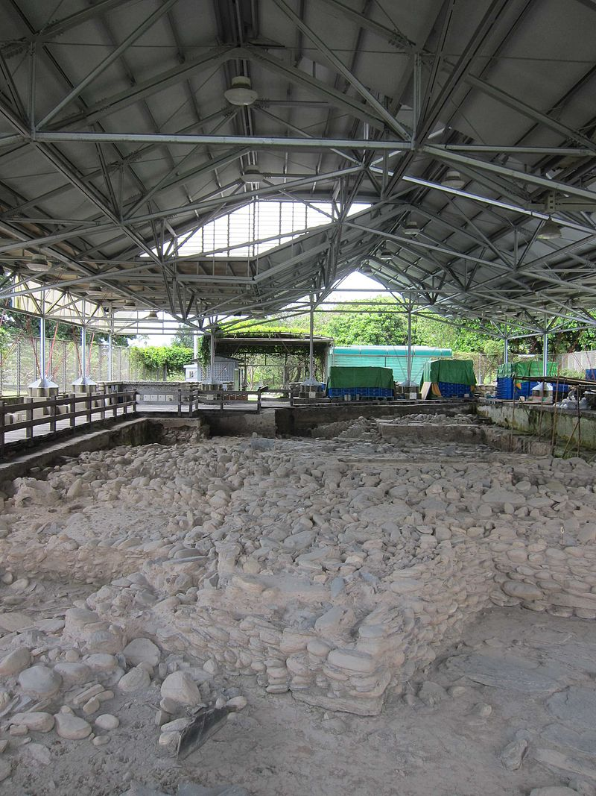

台東景點介紹
1.伯朗大道
地址:958台東縣池上鄉

簡介: 臺東縣池上鄉的錦新三號道路，筆直的田園道路通往遠處山際，沒有任何電線杆與房屋，更能讓人感受大自然的純粹，每當秋收時節，金黃色的稻穗構成絕美風景畫，因而被伯朗咖啡選中拍攝廣告而聲名大噪，故又被稱為「伯朗大道」。旅客可在此騎乘腳踏車，途中還會經過一顆名為「金城武樹」的茄苳樹，因拍攝金城武樹下奉茶片段而爆紅，也是遊客來訪必拍的景點之一。
官方網址:https://tour.taitung.gov.tw/zh-tw/attraction/details/430
參考資料和圖片來源:https://tour.taitung.gov.tw/zh-tw/attraction/details/430
2.多良車站
地址:臺東縣太麻里鄉多良村瀧溪8-1號

簡介:鐵道旁是絕美的無敵海景，另一面是天然山脈 當火車來臨時的景色，更是說不出口的美呀 想必連乘坐在火車上的旅人也都是一種驕傲吧 來訪台東太麻里，絕對不能錯過這麼美的景點 2019整修後的多良車站變的更美了 還有最新向陽薪傳木工坊的天使之翼打卡點 想感受在大海上飛翔，那就來一趟多良車站吧!
官方網址:https://fullfenblog.tw/2016-08-14-628/
參考網站及圖片來源:https://fullfenblog.tw/2016-08-14-628/
3.台東大學
地址:950台東縣台東市大學路二段369號

台東大學知本校區校園:
簡介:身為台東大學的學生，很推薦外地人來台東大學走一走，無論是圖書館這個打卡景點，又或者是想來台東呼吸新鮮空氣，來台東大學就對了，往後看是綿延的山脈，往前看是一望無際的太平洋，台東大學是個讓人放鬆的好地方!
官方網址:www.nttu.edu.tw
圖片來源:https://fullfenblog.tw/nttu-library/
影片來源:https://www.youtube.com/watch?v=f3UvWYZkhYg
4.小野柳
地址:950台東縣台東市松江路一段500號
簡介:小野柳位於富岡漁港北方的海域，是東部海岸最南端的風景據點，因地形和岩石在種類上，與北關的野柳外貌相似，因此被稱為「小野柳」。園區內設有遊客中心、賣店、露營區與海邊步道等，來到這裡除了欣賞不同類型的奇岩怪石、觀海聽浪、賞魚戲水之外，天氣晴朗時更能眺望約33公里外的綠島
官方網站:https://www.eastcoast-nsa.gov.tw/zh-tw/siteinformation/copyright
參考網站及圖片來源:https://www.eastcoast-nsa.gov.tw/zh-tw/attractions/detail/32
4.卑南遺址(卑南文化公園)
地址:950台東縣台東市文化公園路200號
 簡介:卑南遺址是目前全台灣規模最大，地下文物出土最多的遺址，大約三千年前卑南文化時期的墓地以及住宅區，挖出的石棺數目、出土的玉器、陶器、石器都非常多，另外，整個卑南遺址公園的規劃理念，是將遺址視作一個蒼穹博物館。因此，該公園的一個特色，就是可以在園區內看到現場的考古發掘展示。
官方網站:https://www.nmp.gov.tw/content_263.html
圖片來源:https://zh.wikipedia.org/wiki/%E5%8D%91%E5%8D%97%E9%81%BA%E5%9D%80#/media/File:Dulan_Stone_Wall_-_4.JPG
參考資料:https://zh.wikipedia.org/wiki/%E5%8D%91%E5%8D%97%E9%81%BA%E5%9D%80